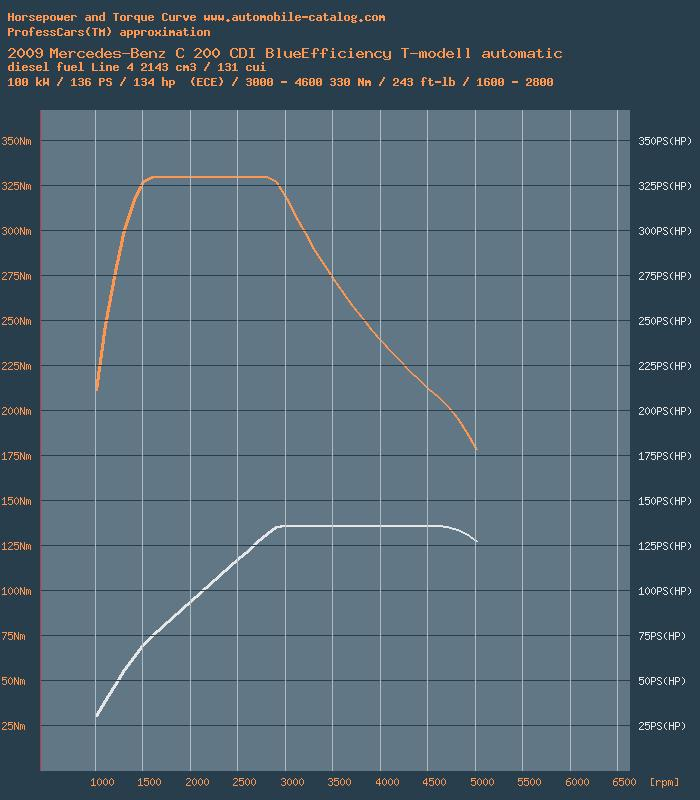
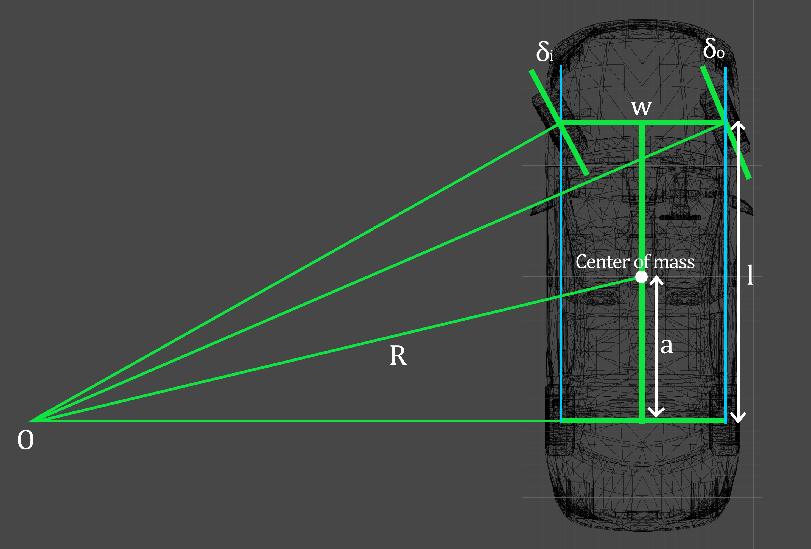
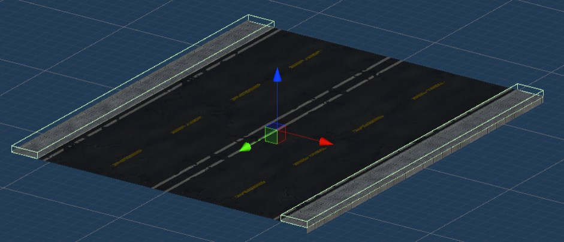
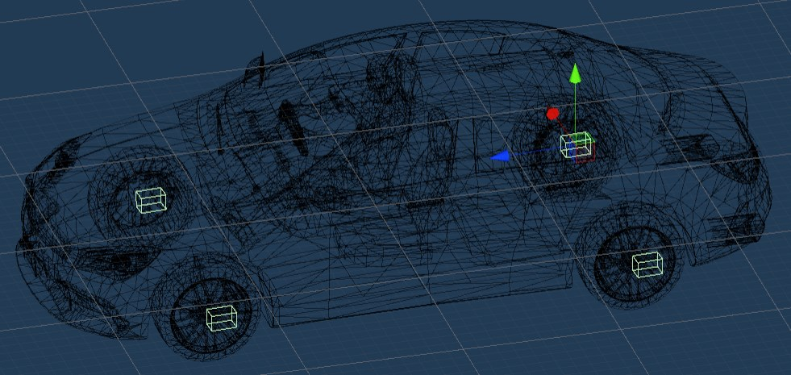
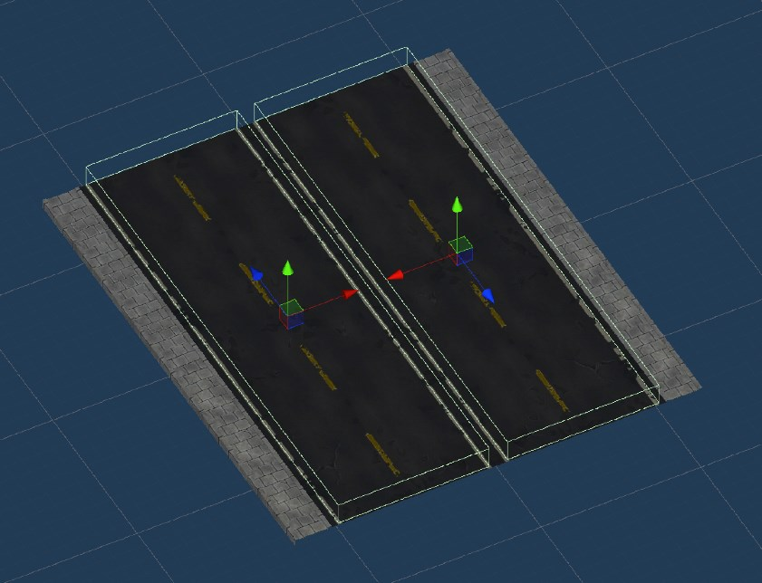

This driving simulator is made for my final assignment at college. This simulator is developed with traffic violation detection system. The player will drive in first person perspective and when the player drives, the system will track the traffic violations
which the player does and calculate the score. The car that the player drives is using automatic transmission. The player only needs to control the steering and gas/brake function of the car.
Player can drive in two modes, free mode and mission mode. In free mode, player can drives freely without any goal. In mission mode, player is needed to drives to a certain place to finish a mission and end the simulation. After the simulation is finished,
player can see their performance from a report that is generated in reports menu. The video of the driving simulator can be seen below.
UnityGLTF, for importing GLTF 2.0 models that exported from Blender
PLAYER'S CAR
Low-Poly Civillian Vehicle #5 model asset is used as the
player car model in the simulator. The model have driver seat at the left side so I import the file to blender and flip the interior model so that the driver side is in the right side (my country, Indonesia, uses left lane driving).
CAR'S ENGINE
The physics system of the car is coded without using any external assets. I got several resources for the physics system of the car. The main resource I used was pablo's "How to make a 3d video game in unity tutorial" series. That series explained how to make the physics system for the car and add the gearbox system to the car. My other
resource that are quite good at explaining the physics is Marco Monster's "Car Physics for Games".
Both sources helped me a lot in developing the physics system for the car engine.
Mercedes-Benz C200 CDI's engine system is used as the references for the engine of the player's car. The transmission system has 6 forward gears and 1 reverse gear. The ratios can be seen in the table below.
Table 1: Car's Gearbox Ratios
Gear
Ratio
1
5.014
2
2.831
3
1.789
4
1.256
5
1.000
6
0.828
reverse
4.569
final drive
2.65
For the torque curve, I also used the Mercedes-Benz C200 CDI's torque curve. The curve can be seen in the image below.

Fig. 1 Torque Curve and Horsepower of Mercedes-Benz C200 CDI (Source: automobile catalog)
The torque curve starts from 1000 and stops at 5000. The curve stops at 5000 because if the RPM go more than that, the car's engine will be broken (in real life). If the RPM goes to 5000 in the game, the transmission will shift up when the minimum velocity
for shifting up the gear is reached. The higher the transmission gear of the car, the slower the RPM accelerates. That way it would be impossible to reach 5000 RPM when the car is on the highest gear as the acceleration of the
RPM will be very very slow or will stop at some point before reaching 5000 RPM (when tested the RPM would stuck at ~2940).
Fig. 2 Testing Max Engine RPM at Highest Gear
The physics system that I coded is far from perfect as I have limited knowledge about car physics. So there are definitelly some stuffs that can be improved to make the system more realistic.
STEERING
Ackermann steering geometry is used for the steering system. Ackermann geometry is a geometric
arrangement of linkages in the steering of a car or other vehicle designed to solve the problem of wheels on the inside and outside of a turn needing to trace out circles of different radius. The intention of Ackermann geometry
is to avoid the need for tires to slip sideways when following the path around a curve. You can look the figure below for the ackermann steering design for the car.

Fig. 3 Ackermann Steering for The Car's Steering System
The track length (w) of the car model I used is 1.4865 meter. The length of the wheelbase (l) is 2.6864 meter, the length of center of mass to the rear track (a) is 1.295753 meter, and the angle of the inner wheel (δi)is 30° or 0.523599 rad. To calculate the steer angle in the code, the length of R needs to be known.
Using formula on this resource, I got 5,5 meter as the length of R. From that, I can calculate the angle of the tires using
these equations below.
note: turnInput is the user input with range from -1 to 1 (float).
Lastly, for the steering wheel animation, if the user uses keyboard, I'm going to multiply the average of the front tires turning angle by 12. That means for every 12° of the steer angle, it will turn the average of the front tires turning angle by
1°. If the user uses steering wheel controller, then I'm going to multiply the angle of the steering wheel controller by half the maximum of the steering wheel's turning angle.
TRANSMISSION SYSTEM
The transmission system use velocity as criteria for changing the transmission gear. The speed limits for every gear I used is gotten from formula that is written in
this source. The formula of maximum velocity for every gears can be seen below:
\(\Omega_{e} =\) the maximum engine RPM of the car (the red line)
\(g_{k} =\) the gear ratios
\(G = \) the final drive ratio
If the car's velocity exceeds the speed limit for the next gear, the transmission will shift up. If the car velocity is lower than the speed limit of the previous gear, the transmission will shift down.
TRAFFIC SYSTEM
The traffic system in this simulation uses the Intelligent Traffic System (iTS) from the Unity Assets Store. I used this asset because it is very good
at handling the vehicles traffic and I didn't have the time to make the traffic system from scratch. It is very easy to setup the traffic system using this asset. Even so, this asset have a bad system for pedestrians (the pedestrians
act like a car in this asset). That is why it is better to have another asset handle pedestrians (or make the traffic system from scratch that can fullfill your need).
TRAFFIC VIOLATION DETECTION
There are 3 types of violation that are detected by the systems.
Detecting when player's car hit pedestrians/cars/road rails
To detect this, pedestrians, cars, and road rails have tag. The system will differentiate the object it hits using tag.
Detecting when player's car hit the pavement
There are triggers on every pavement surface that will detect when the car's wheel hit or is on the pavement. Four small colliders also set up for every car's wheel. The setup for trigger on pavement and for colliders on car's wheels can be seen below.

Fig. 4 Trigger on Pavements Setup

Fig. 5 Setup for Colliders on Car's Wheels
Detecting when player's car go against the traffic
Every road have triggers on the surface. The triggers will have their z axis point to the same way as the traffic direction. By calculating the dot product of the car's z axis and the trigger's z axis, I can check if the car is against the traffic flow or not.

Fig. 6 Road Triggers Setup
RAGDOLL FOR PEDESTRIAN
As I said before, the Intelligent Traffic System is not good enough for the pedestrians system. With only iTS, the pedestrian will not fall when hit by car. They are still standing and trying to walk to their destination point after hit. So to take care
of this, I need the pedestrian to become ragdoll when hit. To do that, when the car hit pedestrian, I made the system deactivates the pedestrian object that are being managed by iTS and replaces it with a pedestrian ragdoll with
the same mesh. That way it will look like the pedestrian is fallen after being hit.
RESOURCES & REFERENCES
automobile catalog, 2010. Mercedes-Benz C 200 CDI BlueEfficiency (man. 6).
Link
Blender Foundation, n.d. Download - blender.org.
Link